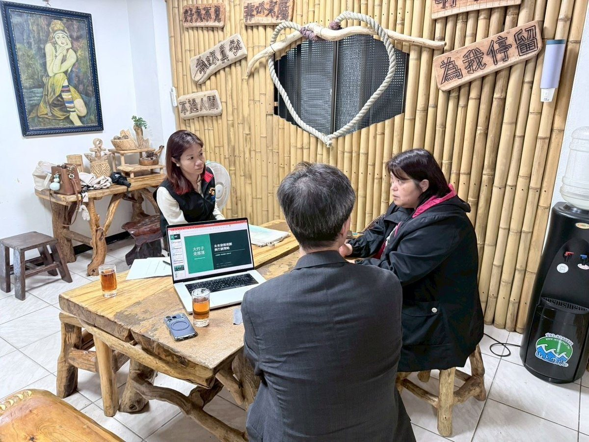

花蓮縣府深耕秀林加灣部落 助原風禮坊打造太魯閣獵寮煙燻饗宴

可樂電子報小編/編輯
花蓮縣政府持續推動地方創生，透過「花蓮縣地方創生輔導團」深入各鄉鎮市，瞭解地方產業發展現況與實際需求，協助團隊盤點資源、研議方向，並串聯中央相關計畫資源。日前輔導團走進秀林鄉景美村加灣部落，訪視在地業者「大竹子走部落」，針對遊程規劃、品牌定位及馬告商品開發交換意見。

「大竹子走部落」由經營原住民族產業平臺逾十五年的原風禮坊團隊自113年起返鄉建置，結合太魯閣族煙燻保存技法、野菜飲食與獵寮文化，在Blbul燻食野菜園以九芎、白舉木、龍眼木等木材燻製魚肉，搭配翼豆、香蕉心及蕨類等野菜，推出「Blbul煙燻餐桌」。
團隊也透過香蕉樹植物童玩與獵寮體驗，帶領旅人認識族人的山林生活。原風禮坊並與大同、大禮等部落合作開發馬告燻肉、鳳梨酥等商品，近期更規劃以秀林馬告搭配花蓮紅玉紅茶推出禮盒，讓部落食材以更精緻的樣貌走進市場。
針對團客減少的課題，輔導團建議以太魯閣族生活文化為核心強化遊程特色，並研議遊程分級，讓不同需求的旅客都能找到合適的體驗內容；新商品則應先定位市場與目標客群，再評估申請小型企業創新研發計畫（SBIR）或原住民族委員會相關資源。
縣長徐榛蔚肯定部落團隊返鄉傳承文化、發展特色產業。她表示，地方創生的核心在於陪伴在地找到自己的路，縣府會持續透過輔導機制，協助部落盤點經營需求、研議遊程及商品發展方向，讓團隊在傳承文化的同時，逐步建立可持續經營的發展模式。
縣府指出，花蓮縣地方創生輔導團提供諮詢服務，服務時間為週一至週五上午8時30分至下午5時30分，相關資訊可上「花蓮好+」地方創生資訊網查詢，歡迎有意發展地方特色產業的團隊多加利用。
🌟 掌握花蓮在地第一手資訊・歡迎訂閱追蹤
深度紀實報導、在地精采影音專題，第一時間接收最新消息！